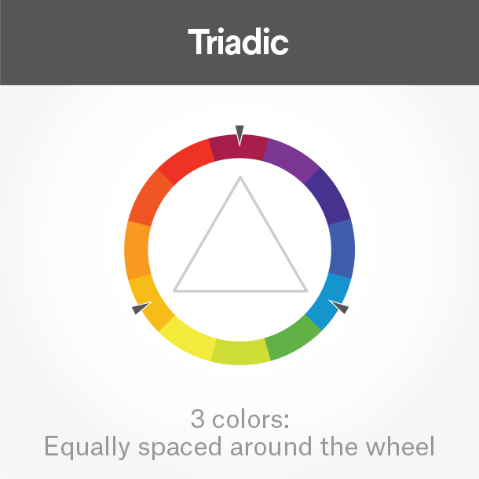
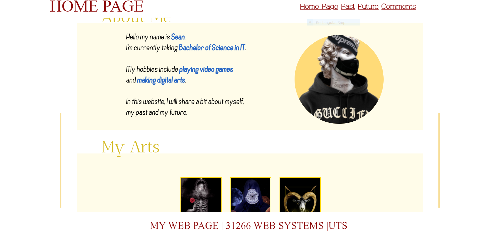

Overall
Overall
This is my first website design ever as well as my first interaction with HTML/CSS. So it is safe to say that this web page has many flaws and unfulfilled potentials
, due to the limitations of my knowledge. There are many features I want to add but the codings required are outside my range of understanding, so stuffing them would just be plagiriasm.
However, this website is still functional and I am very proud of what I've done.
Overview of this website:
| Page Name | Description |
|---|---|
| Home Page | This page introduces some information about me, what I do in my free time and my favborite video games. |
| Past | This page introduces my past in the form of related questions. The answer can be seen by hovering over the question |
| Future | This page introduces my future ambitions, what I want to do and how I will achieve them. |
| Comments | This page elaborates on my intentions with the website and the technical/ aesthetic aspects |
There are five main files:
This is the main homepage of the website. It has three parts namely "About me", "My Arts" and "My Favorite Games". The main feature of this page is its 'hover gallery'. There are 6 images here, the first three are my favorite artworks which will enlarge if hovered over. The last three are my most played games, when hovered will show their titles.
This html file is for my past. The page is structered with four question boxes about my history with programming. When hovered over, they will reveal the answer to the related question.
This html file shows my future. It is split into two parts, answering these questions respectively: " What are my goals?" and "How will I achieve them". All of which are relevant to this course and to my journey here at UTS.
This html file is equipped with an index table to help the user navigate around. There are four main aspects that will be coverd here: "Overall", "Technical Aspects", "Aesthetics" and "Accessibility". All of which are crucial to the foundation of a good website. It also includes a "back-to-top" arrow, linking the image to an invisible anchor at the top of the page.
This css file includes everything that styles the web page, from positioning, fonts, colors and any feature used in this website.
The header consists of an navigation table to navigate between pages using .index class, as well as the name of the page you're currently on.
When viewed on smaller devices, the table will shrink into "Menu" and will expand into the navigation table when being hovered on
. This is done by creating an invisible .index2 class, which will appear when .index disappears at a certain screen size.
The body is where the main content takes place, this varies between pages. The body usually contains the title of the section and the content within it. There are also decorative boxes that use an absolute position, as well as other elements with a fixed position (this can been seen on Home Page and Past) to frame the page.
The footer is where additional information can be found, including the course name and the university that I'm enrolling in.
| Name | Type | Purpose |
|---|---|---|
| html | Element | Sets the background, and various sizing elements for the website |
| .header,.footer | Class | Sets up styles (fonts, size, color, background) and positions header and footer elements |
| .title | Class | Sets up styles (fonts, size, color) and positions the titles |
| .content | Class | Sets up the paragraphs in a website, usually done with a "span" tag |
| #imgstyle | ID | Sets up images used in the website, including positioning, size, scale, border and hover effects |
| #table | ID | Forms the various table that is used in this page |
| .rectangle | Class | 'Draws' various shapes that are used for decoration, framing and spacing the pages |
| .index | Class | Create hyper links between pages, can also be seen at the top right of the screen |
| .index2 | Class | A substitude for .index, is only used when the screen reaches a certain size |
| #checkbox | ID | A checkbox to toggle between regular/night mode. More about this in the next section |
|
There are also variables of the mentioned selectors(#imgstyle2, .title2, .rectangle2, etc) to fit any specific purposes. The use of @font-face and @media is also included, in order to add custom fonts and make the website responsive to different screens. |
||
This web page is designed with the users' interest in mind. It follows a minimalistic style, keeping it clean and easy to look at. Meanwhile the chosen colors, fonts and layout of the page create a luxury feeling, the intention is to make sure the viewers have a sense of satisfaction upon entering this site.
Moreover, the interactivity of this website makes sure the users don't feel bored after repeated visits, keeping it fresh every time the website is opened.
This web page uses a mixture of red, gold and blue at different shades so they blend together. Keeping in touch with the theme, red and gold symbolize nobility, and the blue is thrown in to create a satisfying contrast to hightlight certain areas.
Each of the main color all has its specific purpose in the layout. Red is used for title and navigation table, usually the outermost part of the website. Gold is used for titles and framing, often at the middle of the design. And the innermost text is black, with important words/phrases highlighted in blue.
The color choice also follows the simple rules of Triadic Color Schemes in Color Theory. (Image courtesy of 99Designs.com)

The main fonts here are: Virtuous Slab, AnticDidone and Cronus, used for the navigation bar, title and the content respectively. These fonts aren't what people are used to, but they convey the aproach I'm going for very well. They can be read easily on different devices and have a bit more personality than the standard ones.
One of the most interesting parts about this website is its interaction with the user. For example, the user can hover onto the questions in the Past page and reveal their answers, creating this back and forth interaction that will surely be less boring than reading a paragraph.
All clickable links will change color when cicked on, and the boxes will also have their color shades changed when they're hovered over by the cursor.
Upon clicking the night mode button, it will make the background black, the text white, as well as lightening or dampening areas where suitable.
The colors in Night Mode are also carefully chosen, so as not to ruin the aesthetic of the page. Dark red will turn to brighter pink, while bright yellow will become more brownish so the white text can pop out
This website has a unique feature when viewed on smaller devices. It will "minimalise" itself, trimming all the unnecessary decorations. The main paragraphs and titles of course are still kept, and they have been repositioned vertically with different color choices to fit better on smaller, verticle devices ( mobile phones) .
When viewed on smaller screens, the navigation bar will also collapse into a menu button, when upon clicked on, will expand into the actual navigation bar. This feature aims to reduce text clusters when accessed on mobile phones and smaller tablets.
This website has been tested when viewed in smaller devices and on mobiles using Chrome's built-in consoles. The results came back positive, as all pages are clear and readable on all devices (see fullscreen and mobile screen comparison below). The trimming of decorations plays a major part in this.
Every page in this website has been tested using a screen reader extension provided by Google Chrome. The program picked up every word easily and conveyed the message as clearly as possible. All pages can be understood without having to look at it, alternate texts hidden under images help describe the pictures accurately.
Night Mode:As mentioned before, one of my most proud achievements working on this is the implementaion of Night Mode. When reading this website several hours a day, I find it straining on the eyes to view the white background in extended periods of time. Too bright of a background will also damage users who are short-sighted, and for those who are ocularly healthy, it will turn them short-sighted as well.
Night Mode is added with hopes of not causing any discomfort to the user, and making sure that it can be safely accessed even in dark environments.
The main colors chosen in this have been tested for contrast using Webaim.org and the results came back as pass, since every color used constrasts with the white background.
The website has also been checked for the color blind using the web extension RGBlind. After applying 3 color blind filters, the website still remains relatively the same as it does without the filters.